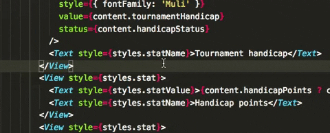
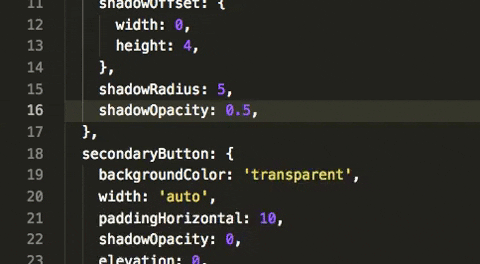
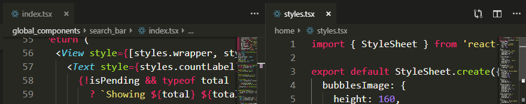
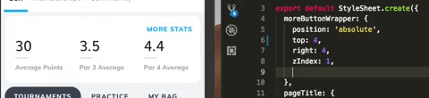
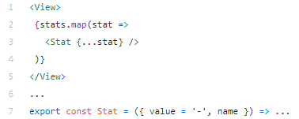
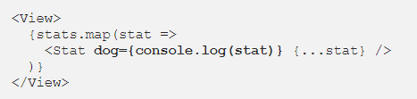

1. Get a Mac
I can't stress this enough. If you’re e.g. a Windows user and think it would be better to use the OS you’re used accustomed to, let’s just say this one’s non-negotiable — macOS is the way to go when it comes to React Native development.
There are two major reasons for this:
1. MacOS is the only way to build for iOS. Apple really knows its business, and their closed ecosystem tactic It’s no coincidence that all the tutorials take it for granted that you use a Mac — if you want to do cross-platform development, you will, sooner or later, need a Mac.
2. General performance and stability. React Native started as an iOS “thing” and it shows. The simulator, the build process, the Fast Refresh features, remote JS debugging — they all work beautifully on macOS. On Windows, npm, React Native itself, and even the Windows command line are all sorts of buggy.
The process of developing React Native is at least twice as fast on a Mac, so if you want to start off on the right foot, make sure you are (or will be) a macOS user.
2. Get a Better Mac
No really. React Native is one of the techs that can eat as many resources as you give it, and for good reason. The workflow usually benefits from having as many iOS/Android emulators open at the same time. This will let you achieve a consistent implementation throughout environments as quickly as possible.
Additionally, as every CTRL+ S in your IDE is a rebuild of the bundle, minimizing build time means minimized waiting between writing a
piece of code and seeing its effects. Those tens or hundreds of times a day really add up.
Plus, there’s nothing as satisfying as seeing your code results instantly.
3. Make the IDE Do the Work for You
Every IDE comes with some kind of formatting feature, and you might think that’s enough. But today’s IDE’s have gotten smarter, and are about much, much more than just that.
Indenting code, removing variables, sorting imports, transforming quotes, and everything else that makes your code cleaner and more consistent— it can all be done by your IDE and it should be done by your IDE!
Get to a point where you don’t even remember the last time you pressed the Tab key.
Here's a great resource that guides you in setting up your Prettier+ESlint Airbnb rules integrated into vscode: https://blog.echobind.com/integrating-prettier-eslint-airbnb-style-guide-in-vscode-47f07b5d7d6a
4. Snippet Everything
Take the DRY principle to the max. Do you see yourself manually writing <View></View> or
<Text></Text> too often? Turn them into a snippet!
And don’t stop there — maybe you also want to apply a style to the view you just created, so why not make it just that?
I have created over 25 snippets during React Native development. I made them available here (I’m using VS Code). Feel free to use them as a source of inspiration or as they are.
Just make sure you don’t let the IDE get in your way. Learn how to create them easily and efficiently, so you don’t feel like you’re wasting the time you’re saving.
Writing 3 characters and generating 30 will always make you feel like a pro.
5. Twice the Windows, Twice the Speed?
Not quite… But very helpful nonetheless.
Whenever you find yourself juggling through the same two files over and over, make a habit of splitting that window in two.
It may seem a bit confusing or overwhelming at first, but, especially if you’ve got the real estate, it’s the bread and butter of coding efficiency.
Getting friendly with your hotkeys goes a long way towards turning this into a habit. Find and bind the IDE command that works best for you.
For me, the one that does just what I need (in VS Code) is workbench.action.focusSecondEditorGroup. It removes the hassle of opening a
new tab, moving the file and then focusing the tab, by doing it with a single key combo (in my case CTRL+ 2).
For example, having both your markup and styling on-screen while creating UI’s is a much more comfortable experience and will save you time as well.
6. Use Fast Refresh for Inspecting Your UI
React Native’s Fast Refresh feature is one of the hottest (pun intended) implementations out there when it comes to previewing code changes.
Fast Refresh, apart from its contribution to a quicker, more efficient development flow, turns out to be a really helpful element inspection tool as well.
Let’s take a look.
Combining the power of hot reloading with a quick snippet, you can get exactly what you need in no time. All without leaving your IDE.
Example: Make a bred snippet that creates a red border, use it inside any element, hit CMD+S and see your
element pop on screen. You can then adjust or enhance your element’s styling to your liking. This might seem simple and limited, but in practice turns
out to be just what you need 95% of the time.
This method will also mean you don’t have to open inspect pop-ups and menus, and disrupt your coding workflow. Debug-as-you-go with this simple trick.
7. Use Fast Refresh for Debugging Your Code
An even more useful trick when using hot reloading is the ability to check the values of any variables from the current frame. Consider this example:
This “Player Stats” screen is supposed to show stats of a player. But it looks like something is broken, and we need to find out what it
is.
The code looks like this:
In the screenshot, the stat seems to aways be “-”. This indicates that the stat variable’s structure has changed, so we need to inspect it.
One way to inspect data in React Native is firing up the remote debugger, un-tab the Chrome window (otherwise RN will whine about background tabs),
open dev tools, open this current file, set a breakpoint right before the return of the render function, reload the app,
navigate in your app to this exact screen and scenario, pray for no source map bugs, and then inspect your received data.
We can do this more easily if we log our stats variable, navigate to this screen, and then check the console for the logged data.
But Fast Refresh enables us to go a step further:

Due to the nature of the render function, each and every time it is called, every attribute of every element is evaluated to be then sent
down as props.
However, here we don’t care about the “to be sent as props” part, we only care about the “is evaluated” part.
Assigning console.log(stat) to a completely arbitrary and non-existent attribute (in this case “dog” — a random string that I’ve found
handy) and then saving to trigger Fast Refresh, our render function will fire, triggering an evaluation of our dog attribute.
There’s our data. No reloads, no inspects, no connecting to remote debuggers; this method gives us the data instantly.
And, of course, we can now see that we actually need to spread stat.content and not stat, as our data was nested under
content.
Use this quick and easy Fast Refresh trick whenever you want to get out of trouble in no time!
Happy coding!